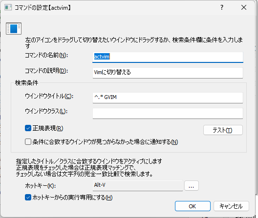

ウインドウ切替コマンド
任意のウインドウをアクティブにする(前面に出す)ためのコマンド。
検索条件をあらかじめ設定しておき、それに対してキーワードやホットキーを設定することができる。
よく使うアプリのウインドウを登録しておけば、そのアプリに素早く切り替えることができる。
タイトルとウインドウクラス名でウインドウを識別する。
対象とするウインドウのタイトルとウインドウクラス名を手入力するのは難しいので、画面上のアイコンを対象ウインドウにドラッグするのがおすすめ。
ウインドウ選択切替という、名前が似た別の機能もある。
ウインドウ切替コマンドとウインドウ選択切替の違いウインドウ切替コマンド
コマンド設定で指定した条件でウインドウに切り替える目的のウインドウへの切替を行うためのもの
ウインドウ選択切替
そのときに存在しているウインドウの一覧を列挙し、選択したウインドウに切り替えるAlt-Tabによるウインドウ切替のようなもの
設定画面

コマンドの名前
入力画面からコマンドを実行するためのキーワードコマンドの説明
コメント表示欄に記載される文字列。ウインドウタイトル
検索対象とするウインドウのタイトルを指定する。
空欄にした場合はウインドウクラスのみで検索を行うウインドウクラス
検索対象とするウインドウクラスを指定する。
空欄にした場合はウインドウタイトルのみで検索を行うウインドウタイトルとウインドウクラスのどちらかを指定する必要がある
正規表現
チェックした場合、ウインドウタイトルとウインドウクラスに入力した文字列を正規表現として扱う
チェックしない場合、ウインドウタイトルとウインドウクラスに入力した文字列の完全一致で探すテスト
ウインドウタイトルウインドウクラス正規表現に入力した内容に基づいてウインドウを探す。
該当するウインドウが見つかった場合はタスクバー上にあるアイコンが点滅する。ホットキー
コマンドを呼び出すキーバインドを設定できる。設定したキーを押下するとコマンドを実行できるようになる。ホットキーからの実行専用にする
チェックした場合、キーワード入力でコマンド名がマッチしてもコマンドを候補欄に表示しない
(ホットキーを入力した場合のみ実行できるようにする)
例
上の画面の設定でコマンドを作っておくと、下記の操作のいずれかで検索条件に該当するウインドウに切り替えることができる。
キーワード
actvimを実行する(入力画面を表示した状態で)
Alt-V押下
Windows標準のウインドウ切り替えのキー操作であるAlt-TabやWin-Tabの場合、以下の問題がある。
その時々のウインドウの表示状態によりキー操作する回数が変わる
ウインドウの数が増えると目的のウインドウを探すのに時間がかかる
このコマンドを使うと、画面にあるウインドウ数にかかわらず、定数時間で切り替えることができるのがメリット
実行時の動作
押下キー |
動作 |
|---|---|
|
ウインドウを切り替える |
|
ウインドウを切り替えて最大化する |